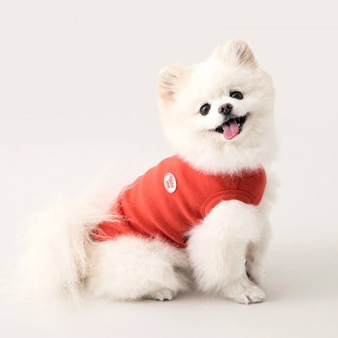
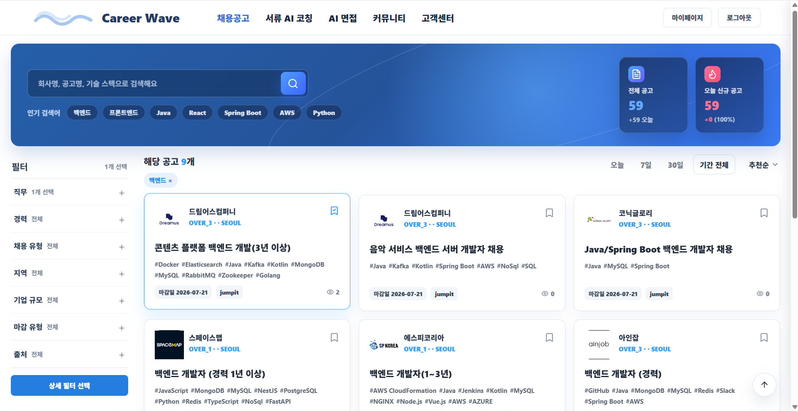
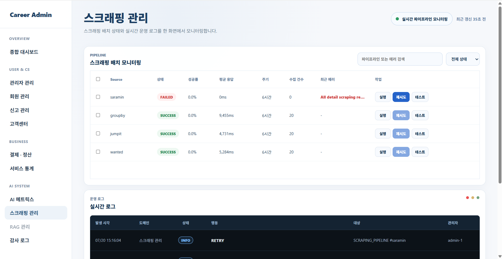
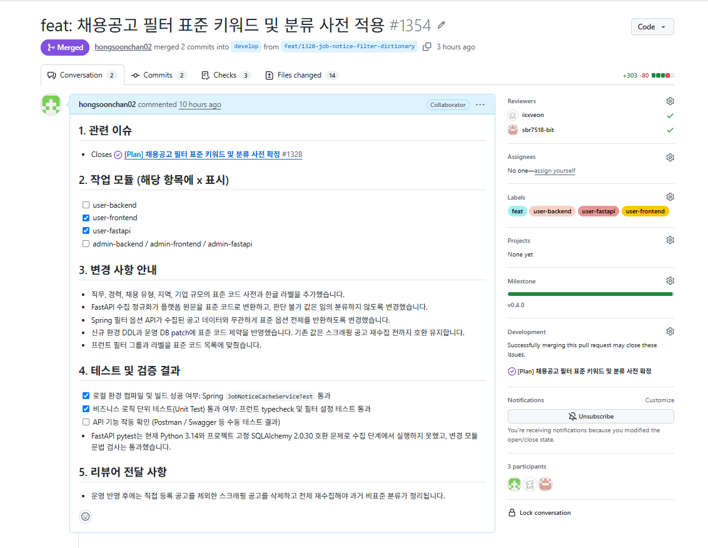
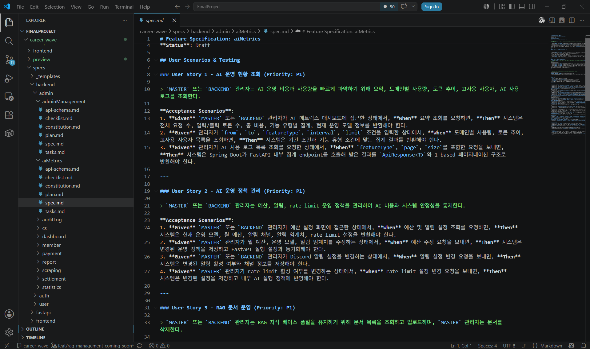

종합 운영 대시보드
관리자 서비스의 실시간 운영 현황을 한 화면에서 확인할 수 있는 종합 대시보드를 구현했습니다. 신규 관리자, 활성 관리자, AI 인터뷰 세션, 매출 현황을 요약 카드로 제공하고, 주요 알림, 시스템 상태, 주간 가입자 추이, 결제 수단 비중, 최근 관리자 활동 로그를 시각화해 관리자가 서비스 상태와 처리 항목을 빠르게 파악할 수 있도록 구성했습니다.
Final Project
AI 기반 취업 준비 플랫폼으로, 사용자의 이력서 분석, AI 면접, 채용 공고 탐색 기능을 통합 제공하는 커리어 지원 서비스입니다..

Repository
Design Assets

정적 리소스, 애플리케이션 서버, 데이터베이스, 외부 AI API 연동 흐름을 정리합니다.

일반 사용자, 조직 관리자, 시스템 관리자가 수행하는 주요 흐름을 구분합니다.

조직, 사용자, 문서, AI 요청, 사용 이력의 관계와 제약 조건을 정리합니다.
Features
관리자 서비스의 실시간 운영 현황을 한 화면에서 확인할 수 있는 종합 대시보드를 구현했습니다. 신규 관리자, 활성 관리자, AI 인터뷰 세션, 매출 현황을 요약 카드로 제공하고, 주요 알림, 시스템 상태, 주간 가입자 추이, 결제 수단 비중, 최근 관리자 활동 로그를 시각화해 관리자가 서비스 상태와 처리 항목을 빠르게 파악할 수 있도록 구성했습니다.

관리자와 시스템의 주요 작업 이력을 조회할 수 있는 감사 로그 화면을 구현했습니다. 기간, 도메인, 상태, 관리자 ID, 키워드 검색 조건으로 로그를 필터링할 수 있으며, 발생 시각, 도메인, 상태, 행동, 대상, 관리자 정보를 목록으로 제공합니다. 선택한 로그의 상세 내용, IP 주소, 대상 식별자를 별도 패널에서 확인할 수 있도록 구성해 운영 이슈 추적과 보안 감사에 활용할 수 있도록 했습니다.

회사명, 공고명, 기술 스택 기반 검색 기능과 직무·경력·지역·채용 유형별 필터 기능을 구현했습니다. 공고 카드는 주요 채용 정보를 요약해 보여주며, 사용자가 원하는 공고를 빠르게 비교하고 탐색할 수 있도록 구성했습니다.

관리자 계정 목록, 권한 상태, 최근 접속 이력, IP 정보를 한 화면에서 확인할 수 있도록 구현했습니다. RBAC 기반 권한 필터링과 계정 잠금·삭제 기능을 제공하며, IP ACL 등록을 통해 관리자 도메인 접근을 허용된 대역으로 제한할 수 있도록 구성했습니다.

AI 서류 분석, AI 면접, 관리자 CS AI, 관리자 리포트 AI의 사용량과 리소스 상태를 한 화면에서 확인할 수 있도록 구현했습니다. 요청 수, 성공·실패 건수, 실패율, 평균 응답 시간, 토큰 사용량, 추정 비용을 기능별로 시각화하고, API 연결 상태와 위험도를 함께 표시해 AI 서비스 운영 상태를 실시간으로 모니터링할 수 있도록 구성했습니다.

채용공고 수집 파이프라인의 배치 상태와 실시간 운영 로그를 한 화면에서 모니터링할 수 있도록 구현했습니다. 각 채용 플랫폼별 수집 상태, 성공률, 평균 응답 시간, 실행 주기, 수집 건수, 최근 에러를 확인할 수 있으며, 실행·재시도·테스트·중지 기능을 제공해 스크래핑 작업을 관리자 화면에서 직접 제어할 수 있도록 구성했습니다.
Architecture Notes
채용공고, 관리자 관리, AI 메트릭스, 스크래핑 관리, 종합 대시보드, 감사 로그 등 여러 도메인에서 프론트엔드가 안정적으로 데이터를 사용할 수 있도록 요청·응답 구조를 먼저 정리했습니다. 목록 조회, 검색, 필터링, 상태 변경, 상세 조회처럼 화면 흐름에 필요한 API 응답 필드를 명확히 나누어 기능이 확장되어도 데이터 구조가 흔들리지 않도록 설계했습니다.
관리자 도메인은 운영 권한과 보안 관리가 필요한 영역이기 때문에 RBAC 기반 권한 상태를 화면에서 확인하고 관리할 수 있도록 구성했습니다. 관리자 계정의 권한, 상태, 최근 접속 정보, 계정 잠금 여부를 분리해 보여주고, IP ACL은 접근 제어 정책을 등록·조회·수정·삭제할 수 있는 관리 기능 중심으로 구현했습니다. 또한 감사 로그를 통해 주요 관리자 활동 이력을 확인할 수 있도록 구성했습니다.
AI 메트릭스, 스크래핑 관리, 종합 대시보드에서는 서비스 운영 상태를 빠르게 파악할 수 있도록 모니터링 지표를 중심으로 화면을 구성했습니다. AI 요청 성공률, 실패율, 평균 응답 시간, 토큰 사용량, 추정 비용과 스크래핑 파이프라인 상태, 수집 건수, 최근 에러, 시스템 상태를 관리자가 한눈에 확인할 수 있도록 정리했습니다.
외부 AI API 호출과 채용공고 스크래핑처럼 실패 가능성이 높은 기능은 상태와 로그를 남기는 구조를 고려했습니다. 요청 성공·실패 여부, 최근 에러, 실행 시간, 관리자 행동 이력을 기록해 문제가 발생했을 때 어느 도메인에서 어떤 작업이 실패했는지 추적할 수 있도록 설계했습니다.
Release Management
파이널프로젝트는 여러 사람이 동시에 작업하는 팀 프로젝트로 진행했습니다. 요구사항 문서, API 계약, 이슈와 PR, 배포 체크리스트, 릴리즈 이후 확인 기준을 연결해 기능 구현이 실제 실행 가능한 상태까지 이어지도록 관리했습니다.
01 / Requirement
사프로젝트 초기부터 Notion에 요구사항, 역할 분담, 화면 정의, API 필요 항목, ERD, 코드 컨벤션을 정리했습니다. 제가 맡은 관리자 도메인은 문서 기준으로 구현 범위와 완료 기준을 나누어 팀원들이 같은 기준으로 개발할 수 있도록 관리했습니다

02 / Pull Request
Issue 단위로 작업 범위를 정의하고 브랜치와 PR을 연결해 기능별 변경 이력을 관리했습니다. PR에는 변경 사항, 테스트 결과, 리뷰어 전달 사항을 기록해 구현 의도와 검증 과정을 추적할 수 있도록 했습니다.

03 / GitHub Actions 기반 릴리즈 관리
PR 병합 이후 CI, Backend Deploy, Frontend Deploy 실행 결과를 확인하며 릴리즈 상태를 관리했습니다. 배포 전에는 API 계약, 환경 변수, DB 연결, 외부 API 키, 빌드 결과를 점검해 설정 누락이나 빌드 실패 가능성을 줄였습니다.

04 / CI 재검증 및 릴리즈 QA
CI 테스트 실패 이후 수정 커밋을 반영하고 Backend Build & Test, FastAPI Lint & Check, Frontend Typecheck & Build 통과 여부를 확인했습니다. 자동 검증 결과를 기준으로 릴리즈 가능 상태를 판단해 빌드 실패와 타입 오류가 배포로 이어지지 않도록 관리했습니다.

05 / AI Skills
요구사항, 사용자 시나리오, API 흐름, 검증 기준을 도메인별 스펙 문서로 먼저 정리했습니다. 이를 바탕으로 Codex를 활용해 구현 방향과 코드 초안을 도출하고, 생성된 코드는 팀 컨벤션에 맞게 검토·수정한 뒤 CodeRabbit 리뷰와 CI 결과로 최종 검증했습니다.
